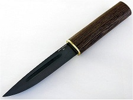
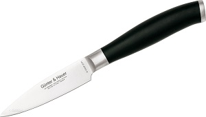
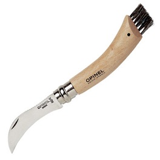

-
Різноманіття видів ножів
Існує величезна кількість ножів якими ви можете користуватися для різних повсяrденних справ.Деякі ви можете придбати у мене і я вам про них розповім детальніше .
Клинок якутського ножа загострений, має лезо з одного боку і прямий (чи майже прямий) обух. Особливістю якутського ножа є асиметричне заточування леза — відзначене ще першими дослідниками життя якутів. З одного боку лезо ножа плоске, має діл (якщо дивитися з боку обуха — то права сторона клинка). Протилежна (ліва) сторона клинка вигнута. Це робиться для того, щоб при роботі з ножем, ніж «не заривався» в матеріал. Саме в зв'язку з цим ножі для правші та шульги відрізняються. Ніж для лівші виробляється з дзеркально перевернутою асиметрією клинка
Ножі для чищення овочів і фруктів - незамінні помічники на кожній кухні. З їх допомогою можна очистити з мінімальною кількістю відходів як м'які фрукти, так і тверді овочі і коренеплоди. Багатофункціональний універсальний ніж для овочів і фруктів має тонке лезо довжиною до 10 см.
З настанням осіннього сезону більшої популярності набуває ніж для грибів. До такого інструменту пред'являються особливі вимоги: лезо повинно бути міцним і негнучким, а рукоятка - досить об'ємною і зручно розташовується в руці.